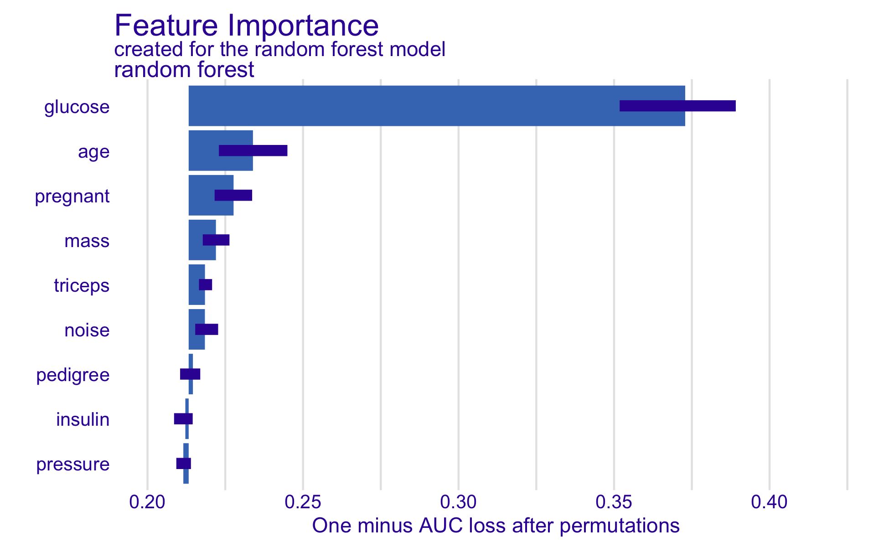
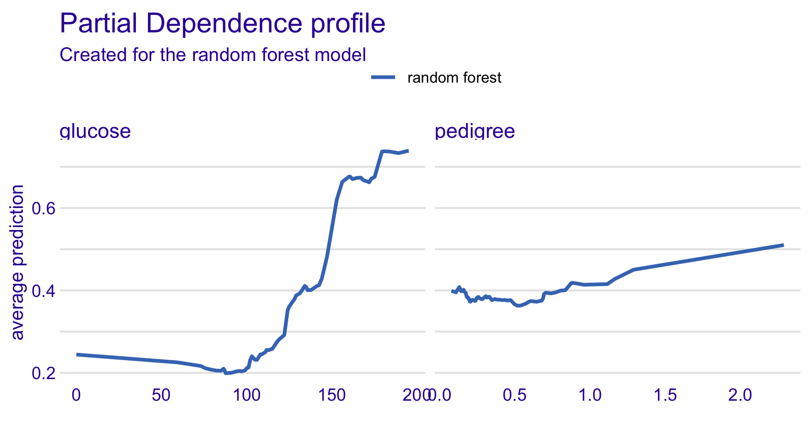
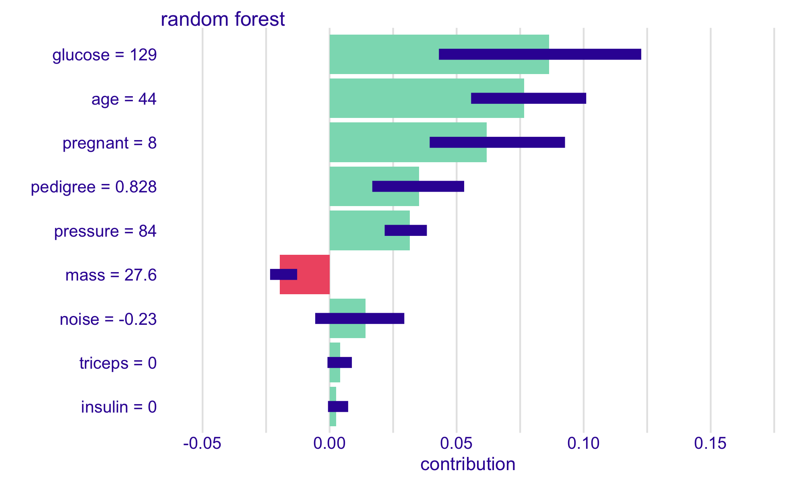
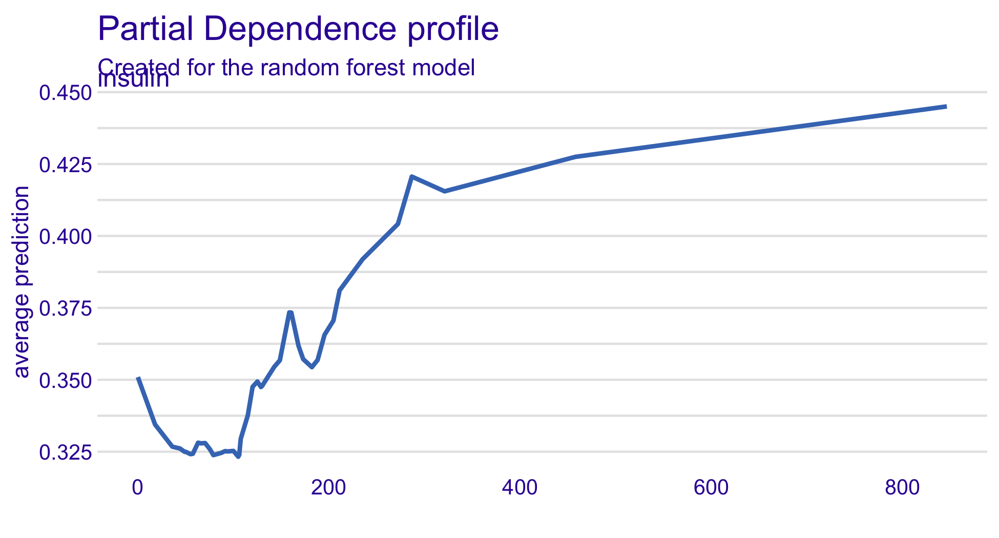

library(readr); library(dplyr); library(tidymodels)
library(DALEX); library(DALEXtra); library(vip); library(ggplot2)
set.seed(123)
dia <- read_csv("data/diabetes.csv", show_col_types = FALSE) |>
mutate(diabetes = factor(diabetes, levels = c("neg", "pos")),
noise = round(rnorm(n()), 2))
split <- initial_split(dia, prop = 0.7, strata = diabetes)
train <- training(split)
test <- testing(split)
rf_wf <- workflow() |>
add_recipe(recipe(diabetes ~ ., data = train) |>
step_normalize(all_numeric_predictors())) |>
add_model(rand_forest(trees = 500, mtry = 3, min_n = 10) |>
set_engine("ranger", importance = "impurity", seed = 123) |>
set_mode("classification"))
rf_fit <- fit(rf_wf, data = train)
explainer <- explain_tidymodels(
rf_fit,
data = select(test, -diabetes),
y = as.numeric(test$diabetes == "pos"),
label = "random forest",
verbose = FALSE
)35 Exercise 6.3 — The same questions in R, with DALEX
45 minutes · work individually
35.1 Objectives
- Wrap a fitted tidymodels workflow in a DALEX explainer, and check that the explainer sees the outcome you think it does.
- Obtain global importance, a partial dependence profile and a local Shapley explanation from the same object.
- Say what a partial dependence profile assumes, and name a variable in this dataset for which the assumption fails.
35.2 Why this, here
Chapter 33 and Chapter 34 were Python. The methods are not Python’s: DALEX gives you permutation importance, Shapley attributions, partial dependence and individual conditional expectation from one explainer object, wrapped around any model that can predict. This chapter answers the same questions in R, on the same data and the same control column, so you can see that the conclusions belong to the methods and not to the language. It also adds the one family of plot that Python’s shap does not give you, and that is the one with the sharpest assumption buried in it.
35.3 One explainer, any model
DALEX works by wrapping the model in a uniform interface: the data, the true outcome, and a function that turns rows into predictions. Everything else is computed from that, which is why the same code works for a forest, a regression or something written by someone else entirely.
WarningRead the
y argument twice
diabetes is a factor, and as.numeric() on a factor returns the level codes — 1 and 2, not 0 and 1. Pass that to explain_tidymodels() and the explainer believes every patient has an outcome of at least 1 while the model predicts probabilities below 1, so every residual is positive and the mean residual is about 1. Nothing errors. The importance plot still draws. Compare with as.numeric(test$diabetes == "pos"), which gives the 0/1 the explainer expects.
The diagnostic is free: print the explainer with verbose = TRUE and read the residual line. If the mean residual is not near zero, the outcome is wrong.
# the free diagnostic: residuals should straddle zero
round(summary(explainer$residuals), 3)#> Min. 1st Qu. Median Mean 3rd Qu. Max.
#> -0.844 -0.291 -0.078 0.001 0.283 0.93235.4 Task 1 — Global importance, and the control for the third time
model_parts() is permutation importance: it shuffles each variable B times and records the loss. For a classification task the default loss is one minus AUC, so a variable that matters has a higher dropout loss than the full model.
set.seed(123)
mp <- model_parts(explainer, B = 20)
plot(mp)
_full_model_ marks the intact loss and _baseline_ the loss of a model that predicts the mean, so the distance between them is all the AUC the forest has. Turn the losses into drops and run the control check.
# Replace every ______ below, then run this cell.
source("checks/checks.R")
losses <- as.data.frame(______) |>
group_by(variable) |>
summarise(loss = mean(dropout_loss), .groups = "drop")
full <- losses$loss[losses$variable == "_full_model_"]
drops <- setNames(losses$loss - ______, losses$variable)
drops <- drops[!names(drops) %in% c("_baseline_", "_full_model_")]
round(sort(drops, decreasing = TRUE), 4)
check_noise_control(drops)
TipStuck?
The quantity you want is each variable’s mean loss minus the loss of the intact model, which is the row model_parts() labels _full_model_. The object to summarise is the one you just plotted.
The picture matches Python’s to the extent that you should expect: glucose far ahead, age second, everything else in an undifferentiated band, and the control inside that band at a few per cent of glucose.
35.5 Partial dependence — the average patient who does not exist
A partial dependence profile asks: if I set this variable to \(v\) for every patient in the data, leaving all their other values alone, what does the model predict on average? Sweep \(v\) across the observed range and you get a curve.
pdp_glucose <- model_profile(explainer, variable = "glucose", type = "partial")
pdp_pedigree <- model_profile(explainer, variable = "pedigree", type = "partial")
plot(pdp_glucose, pdp_pedigree)
Glucose moves the average prediction from about 0.19 to about 0.74 across its range — a real and large effect. Pedigree moves it very little, and most of what movement there is sits at the sparse right-hand end of the variable.
35.6 Task 2 — One curve per patient
The average hides how much the patients differ. geom = "profiles" draws the individual conditional expectation curves — one per patient — with the average on top.
# Replace every ______ below, then run this cell.
plot(pdp_glucose, geom = ______) +
ggtitle("Ceteris paribus profiles for glucose, with the average")
TipStuck?
The argument is geom, and the value is named in the sentence above the cell. ?plot.model_profile lists the alternatives.
Describe the spread. Do all patients respond to glucose in the same way, and would you be happy to quote the average curve to someone asking about one patient?
35.7 Local explanation — the same patient, a different algorithm
predict_parts(type = "shap") computes Shapley values by sampling orderings of the variables, rather than exploiting the tree structure as TreeExplainer does. It is slower and approximate, and it works for models that are not trees.
patient <- test[1, setdiff(names(test), "diabetes")]
patient#> # A tibble: 1 × 9
#> pregnant glucose pressure triceps insulin mass pedigree age noise
#> <dbl> <dbl> <dbl> <dbl> <dbl> <dbl> <dbl> <dbl> <dbl>
#> 1 8 129 84 0 0 27.6 0.828 44 -0.23cat("predicted:", round(predict(explainer, patient), 3),
" actual:", as.character(test$diabetes[1]), "\n")#> predicted: 0.655 actual: posset.seed(123)
local_shap <- predict_parts(explainer, new_observation = patient,
type = "shap", B = 25)
plot(local_shap)
The bars are the same quantity as Chapter 34’s force plot, drawn differently and estimated by a different algorithm. The boxplots behind them are the spread across the 25 sampled orderings — a feature the Python plot does not show you, and a useful reminder that these contributions are estimates with uncertainty unless your model is a tree ensemble.
35.8 Task 3 — The forest’s own importance, for comparison
vip() reads the impurity importance the ranger engine stored while fitting. Plot it, and put it next to the permutation ranking from Task 1.
# Replace every ______ below, then run this cell.
source("checks/checks.R")
imp <- vi(extract_fit_parsnip(______))
imp
check_noise_control(imp)
TipStuck?
vi() needs the model itself, not the workflow that contains it. extract_fit_parsnip() reaches inside a fitted workflow and hands you the parsnip fit.
Same disagreement as in Python, in the same direction: impurity puts the control fifth of nine at around 30% of glucose, permutation puts it in the noise band at a few per cent. Two measures, one model, one figure each, and only the second one is about prediction.
35.9 The result that should bother you
Ask for a partial dependence profile of insulin.
# the profile averages the model over the explainer's data, which is the test set
cat("rows with insulin recorded as 0:",
sum(test$insulin == 0), "of", nrow(test), "\n")#> rows with insulin recorded as 0: 130 of 231cat("largest observed insulin:", max(test$insulin), "\n")#> largest observed insulin: 846plot(model_profile(explainer, variable = "insulin", type = "partial"))
It is a smooth, gently rising curve, and it is nonsense. Three steps.
- More than half the rows the profile averages over record insulin as exactly zero, which is not a measurement — it is a missing value written as a number, the defect you met in Chapter 8. The curve’s left-hand end is the model’s behaviour on “not measured”, plotted as though it were a concentration.
- The curve’s right-hand end sets insulin to its maximum for every patient, including the ones whose insulin was never measured and the ones for whom that combination of values is physiologically impossible. Partial dependence averages the model over rows that do not exist and could not exist.
- So the curve is well defined as a property of the fitted function, and it is not an answer to “what happens if insulin rises”. That question is causal, and nothing on this page can answer it.
The same objection applies, more weakly, to every other partial dependence plot you will ever be shown. Variables are correlated; holding the others fixed while moving one walks you off the data.
35.10 Reflection
- DALEX and
shapgave the same patient’s explanation by different algorithms. What would you conclude if they had disagreed substantially, and what would you check first? - The partial dependence plot for glucose looks like a dose–response curve. Write the sentence that distinguishes what it shows from what a dose–response curve shows.
- You have now explained this forest in two languages with four methods. What is the single piece of evidence that would most change your willingness to put it in front of a clinician — and is it on any of these pages?
35.11 Stretch
NoteStretch 1 — Explain a model DALEX has never heard of
Fit a logistic regression with glm() and build an explainer for it with DALEX::explain(), passing your own predict_function. Put its model_parts() next to the forest’s. The point is not the comparison; it is that the explainer needed nothing from the model except the ability to predict.
NoteStretch 2 — Accumulated local effects
Re-draw the insulin profile with type = "accumulated". ALE profiles average the model’s local slope over the data that actually exists, rather than over a grid of invented rows. How much does the curve change, and does the change support or undermine the reading you gave in step 3 above?
35.12 What you can and cannot now claim
Can: that this forest, explained in R by three methods, tells the same story as the Python explanations of Chapter 34 — glucose dominates, nothing else is clearly separated from the control, and the model’s own impurity importance disagrees with all of it.
Cannot: that any of this is evidence about diabetes. Every figure on this page is a description of a function that was fitted to 537 rows of one synthetic file. What that function has to do with patients is a question none of today’s tools can be made to answer — which is where Chapter 37 leaves you.